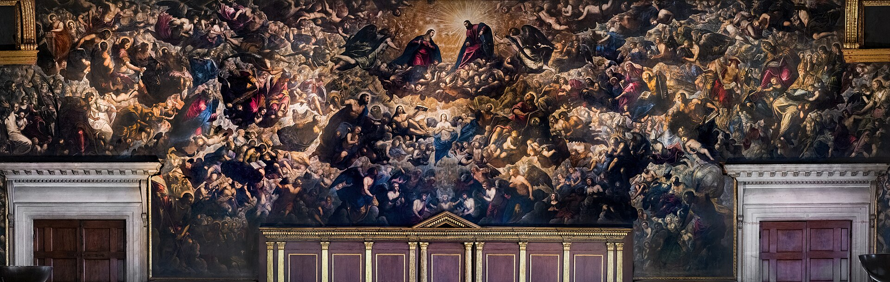
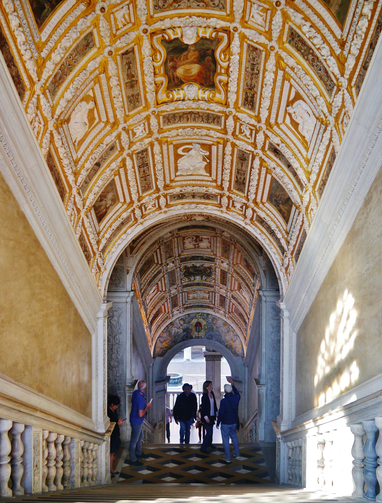
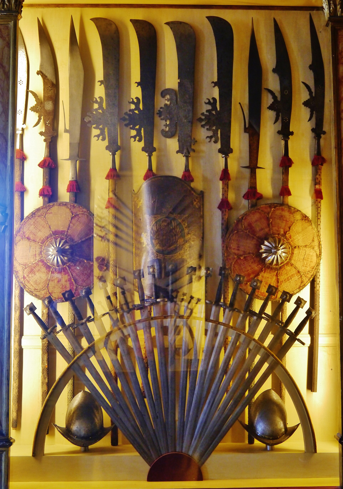

威尼斯共和国的政府大楼、法院与总督官邸三合一：粉白相间的威尼斯哥特立面下，藏着金色楼梯、大议会厅（欧洲最大厅堂之一）与“铅皮监狱”--权力最华丽与最阴暗的两面，由一道叹息之桥连接。
看点路线
Il Percorso
- 1 courtyard 中央楼梯 Scala dei Giganti：总督加冕处
- 2金色楼梯 Scala d'Oro：镀金浮雕天花板
- 3大议会厅 Sala del Maggior Consiglio：丁托列托《天堂》（世界最大画布）+ 总督肖像列廊
- 4过叹息桥进新监狱：卡萨诺瓦越狱现场
重点看点
Il Palazzo · 6 个权力现场

大议会厅与《天堂》
52 x 25 米的厅堂（欧洲最大之一），1800 名贵族议员在此开会。正墙是丁托列托 7 x 22 米的《天堂》--世界最大的画布，画了 500 多个人物。它是替换 1577 年大火焚毁的 Guariento 壁画而作：把议会厅的“天花板”直接开在天国。
总督肖像列廊
大议会厅四周挂着历任总督肖像，但有几位的位置只有一块黑布 + 名字：他们因叛国被“死后除名”（damnatio memoriae）。权力的另一面就绣在这条走廊里：荣誉可以被抹掉，且抹掉本身就是惩罚。

金色楼梯
Sansovino 设计的镀金浮雕穹顶楼梯，只有佩带金印的贵族与贵宾能走。天花板镀金浮雕在烛光下会流动--威尼斯把“权力的入口”设计成一场视觉献殷勤。
地图厅与世界帝国
墙上挂着共和国的疆域与航线图：从潟湖到克里特、塞浦路斯、亚得里亚海东岸。威尼斯是“地图治国的鼻祖”--大议会在这里看着世界开会。
叹息桥与新监狱
总督宫法院与监狱之间的封闭石桥：被判者过桥时透过石格窗最后看一眼潟湖与自由。拜伦把它浪漫化为“叹息之桥”，但它真正的功能是权力的无缝衔接：审判与监禁之间，只有 10 米室内距离。

军械库与“官僚的心脏”
世界最早的“国家军械库”之一：墙上 2000 余件兵器盔甲。旁边的“十人委员会”密室是共和国的秘密警察机关--总督本人的邮件也在这里被拆阅。权力对所有人的监视，包括对权力顶端。
历史故事
Le Storie
壹把总督关进笼子
威尼斯共和国 1100 年的历史里，最大的政治恐惧不是外国入侵，而是“权力失控”。总督的权力被制度层层锁死：加冕时宣读的《总督誓词》长达几十页；外交信件由委员会拆封；总督不得单独接见外国使节。
大议会厅里《总督向狮子致敬》的马赛克是官方意识形态：总督跪在圣马可翼狮前--权力只属于共和国，总督只是它的“管家”。
结果：威尼斯共和国千年之间没有一次成功的总督独裁。对照同时代佛罗伦萨的美第奇、米兰的斯福尔扎--“制度的胜利”是威尼斯留给政治史最独特的遗产。
贰卡萨诺瓦的越狱
1755 年，风流才子贾科莫·卡萨诺瓦以“持异端书籍与占星术”罪名被秘密逮捕，关进总督宫顶层的“铅皮监狱”（Piombi）--因铅皮屋顶夏烤冬冻而得名。
他花了 14 个月用一根铁钉（藏在经书书脊里带回）撬开地板，和一名神父囚犯一起，趁着宫里舞会的喧嚣翻上屋顶、顺绳而下，穿过宫殿大厅换了装，大摇大摆离开威尼斯。
他后来在自传《我的一生》里把这一夜写成欧洲文学史上最著名的越狱记。今天的“秘密行程”导览会带你走同一条路线。
叁一堵墙看两种治理
总督宫最惊人的不是金厅，而是它的“功能混合”：地下一层是法院与刑讯室，中层是议会与行政，顶层是监狱，总督官邸夹在中间。
对照隔壁的圣马可教堂（神权）与广场对面的行政长廊（官僚与律师），圣马可广场其实是“神权-政权-官僚”的三位一体建筑群。
1797 年拿破仑终结共和国时，最后一任总督卢多维科·马宁脱下公爵帽对官员们说：“我们不再需要它。”--权力的剧场谢幕了，但布景留了下来。
肆丁托列托的《天堂》
1577 年大火烧毁了大议会厅的 Guariento 壁画，公开竞赛重绘：委罗内塞与丁托列托入围，委罗内塞去世后，丁托列托（时年 70 岁，与学生含其子多梅尼科）拿下了这个 7x22 米的世界最大画布。
画面里 500 多个人物沿巨大的抛物线升入天堂--从议会厅的地板望上去，天花板仿佛真的开了。
站在厅中央的长椅上仰视：这幅画是为这个视点设计的。看完低头缓一缓脖子--那是 16 世纪画家预期的“副作用”。
伍被“涂黑”的总督们
大议会厅四周挂着历任总督肖像，但有几位的位置只有一块黑布与名字：他们因叛国被“死后除名”。
最著名的一块属于 1355 年的马里诺·法利埃总督：他密谋政变推翻贵族共和国，败露后被斩首于宫殿楼梯顶--油画里他的位置永远是一块黑幕。
权力的另一面就绣在这条肖像廊里：荣誉可以被抹掉，且“抹掉本身就是惩罚”。
陆金色楼梯与“金印准入”
金色楼梯（Scala d'Oro，1554-1558）的镀金浮雕穹顶，只允许佩带金印的贵族与贵宾行走--权力的入口被设计成一场视觉献殷勤。
楼梯的台阶刻意做窄（santini）：让访客不得不放慢脚步、一级一级地仰头--建筑在替权力完成“心理铺垫”。
今天人人可走。上楼时留意穹顶的镀金灰泥（stucco）：烛光时代它会随火光流动--那是桑索维诺设计的“会动的天花板”。
柒十人委员会与“面具国家”
共和国的秘密机关“十人委员会”在宫内密室办公：负责谍报、反叛与道德审查--连总督的邮件也在此被拆阅。
它的三法官（Inquisitori）可在极端案件中直接判死刑：密室的“红色信箱”接受匿名举报，史称“威尼斯的狮子口”。
这套系统高效到令人不安：历史学家统计，十人委员会千年间处理的案件中，密告占了半数--权力的胃口，最终吃的是自己人。
捌地图厅与“帝国的资产负债表”
地图厅（Sala dello Scudo）的墙上挂着共和国的疆域与航线图：从潟湖到克里特、塞浦路斯与亚得里亚海东岸--大议会看着世界地图开会的房间。
其中一幅 15 世纪的世界地图标注了马可·波罗的旅行路线--威尼斯人把自家的旅行者做成了帝国的“知识产权”。
对照佛罗伦萨人以账本治国、米兰人以战争治国：威尼斯人以地图治国。这个房间就是它的地缘战略部。
玖叹息桥的“两个传说”
从法院到监狱的封闭石桥，1600 年落成。真实的“叹息”大多属于小偷与欠债人；浪漫的版本来自拜伦 1818 年的长诗。
另一个流传更广的传说：日落时恋人乘船从桥下亲吻穿过，爱情就会永恒--它没有任何中世纪文献依据，但比历史活得更好。
总督宫的参观动线会让你从桥的内部走过：透过石格窗看最后一眼泻湖--那是 17 世纪囚犯与你共享的同一帧画面。
拾“秘密行程”的三大看点
另购票的秘密行程（Itinerari Segreti）走的是常规动线到不了的区域：法官会议室、刑讯室、铅皮监狱与卡萨诺瓦越狱的天花板夹层。
刑讯室保留着绳吊审讯的原件装置；铅皮监狱的木头门板上满是囚犯的刻痕（包括卡萨诺瓦同伙留下的历法）。
英语场次少、需提前订--但它是理解“金色宫殿另一半”的唯一方式：共和国的阴影面积，全在这条线上。
参观贴士
Consigli Pratici
- 动线（单向）： courtyard -> 二层居室 -> 大议会厅 -> 监狱翼 -> 叹息桥内望
- "秘密行程"（Itinerari Segreti）是另一个 ticket，含刑讯室/铅皮监狱/屋顶--英语场次需提前订，物超所值
- 丁托列托《天堂》最佳观看距离是厅堂正中央的长椅--坐下来仰视
- 宫殿内可拍照（禁闪光）；叹息桥内部石格窗是经典机位
- 与圣马可教堂、钟楼组合半日；三处都含在“圣马可广场文化通票”外，需分别购票
- 旺季 09:00 开门首批进入最舒服；15:00 后旅行团密度最高
顺路同游
Da Non Perdere